Empire Stone × Empire Granite — QA
Golden Path — BOQ เส้นทาง 1: นำเข้า Excel ถึง P&L
อัปเดตล่าสุด: 3 พฤศจิกายน 2569 (2026-11-03) · รันจริงบน eg-tst ผ่านหน้าจอ ใช้ผู้ใช้ emgdemo บริษัท Empire Granite
เอกสารเดียวสำหรับเส้นทางหลักของ BOQ: นำเข้ารายการจากไฟล์ Excel · ออกใบเสนอราคา · ผลิต FG ตามขนาดที่ติดมา · ส่งของ · ใบแจ้งหนี้ · ดูกำไรของ BOQ ใบนี้ · เฉพาะ happy path ไม่มีเคสกรอกผิด
12Test Case ทั้งหมด
5หมวด
11High Priority
1Medium Priority
0Low Priority
เอกสารชุดใหม่ของ BOQ (แทนชุดเดิมที่ย้ายเข้า Archived แล้ว)
- ทำตามทีละขั้นด้วย คู่มือกดตาม BOQ นำเข้า Excel ถึง P&L (มีเหตุผลของแต่ละค่าที่กรอก) · เอกสารนี้ใช้ตรวจว่าผลตรงตามที่ควรเป็น
- ต้องทำ คู่มือกดตาม Setup ระบบ ตอน 2 มาก่อน (มีสินค้า ZZ2 GUIDE MARBLE Countertop และหมวด FIFO + Perpetual) และมี Slab ZZ2 GUIDE MARBLE ที่ Available อย่างน้อย 2 แผ่น
- ขอบเขต 12 เคส: นำเข้า BOQ 2 · ใบเสนอราคา 3 · ยืนยันและผลิต FG 4 · ส่งของและเก็บเงิน 2 · P&L 1
- เส้นทาง 2 (Cut List หลังขาย) และเส้นทาง 3 (สร้าง BOQ เอง) เป็นชุดแยก
A. นำเข้า BOQ จาก Excel
อัปโหลดไฟล์ อ่านไฟล์ ตรวจหน้าตัวอย่าง แล้วสร้าง BOQ · 2 test cases
| TC ID | Scenario | Precondition | Steps | ข้อมูลตัวอย่าง | Expected Result | Priority | ภาพหน้าจอ |
|---|---|---|---|---|---|---|---|
| TC-GP-BQ1-01 | อัปโหลดไฟล์ BOQ และตรวจหน้าตัวอย่างก่อนสร้าง ไฟล์ที่ใช้ควรได้จากปุ่ม ดาวน์โหลดเทมเพลต (กว้าง/ยาว/หนาเป็น ซม.) · ต้องเลือกลูกค้าก่อนปุ่มดาวน์โหลดเทมเพลตจึงทำงาน · สินค้าหินเลือกจาก dropdown ในไฟล์ ห้ามพิมพ์เอง |
เข้าระบบเป็น Empire Granite · ไฟล์ boq-import-zz2-reception.xlsx · มีสินค้า ZZ2 GUIDE MARBLE Countertop (ราคาขาย 3,800 ต่อ ตร.ม.) |
|
Customer = Demo Hotel Customer · แถว 1: ห้องรับรอง · เคาน์เตอร์ห้องรับรอง หินขาว ขัดมัน · ZZ2 GUIDE MARBLE Countertop · 60 × 120 × 2 ซม. · 7.2 ตร.ม. · ค่าแรง 900 · แถว 2: ค่าขนส่งและติดตั้ง · 1 ชิ้น · ราคา 8,000 | หน้าตัวอย่างไม่มีแถวแดง · จำนวนรายการ 2 · วัสดุรวม 35,360.00 · ค่าแรงรวม 6,480.00 · Overhead รวม 4,184.00 · รวม (ก่อนค่าบริหารโครงการ) 46,024.00 · แถวพื้นราคาวัสดุ/หน่วย 3,800.00 (ระบบใส่ราคาขายของสินค้าให้เพราะไฟล์เว้นว่าง) | High | 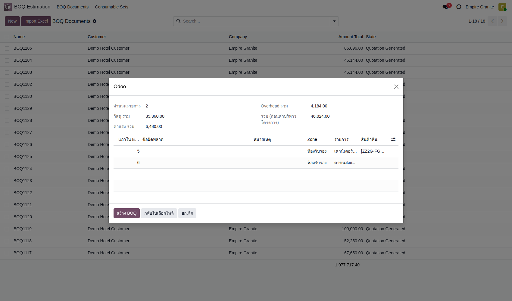 |
| TC-GP-BQ1-02 | สร้าง BOQ จากไฟล์ แล้วตรวจยอดในแท็บ ① ทุกครั้งที่นำเข้าได้ BOQ ใบใหม่ ไม่ทับหรือเติมเข้า BOQ เดิม · ยอด Direct Cost ใน BOQ เป็นราคาตั้งขาย ไม่ใช่ต้นทุนจริงของโรงงาน |
ทำ TC-GP-BQ1-01 เสร็จแล้ว (หน้าตัวอย่างยังเปิดอยู่) |
|
- | ได้ BOQ ใหม่ (รอบทดสอบ BOQ1186) ลูกค้า Demo Hotel Customer · บรรทัดพื้น 7.20 ตร.ม. วัสดุ 3,800.00 ค่าแรง 900.00 ราคา/หน่วย 4,700.00 รวม 33,840.00 · บรรทัดขนส่งและติดตั้ง 1.00 ชิ้น 8,000.00 · Amount Direct Cost 41,840.00 · Amount Overhead Profit 4,184.00 · Amount Total 46,024.00 · แถบสถานะอยู่ที่ ① | High | 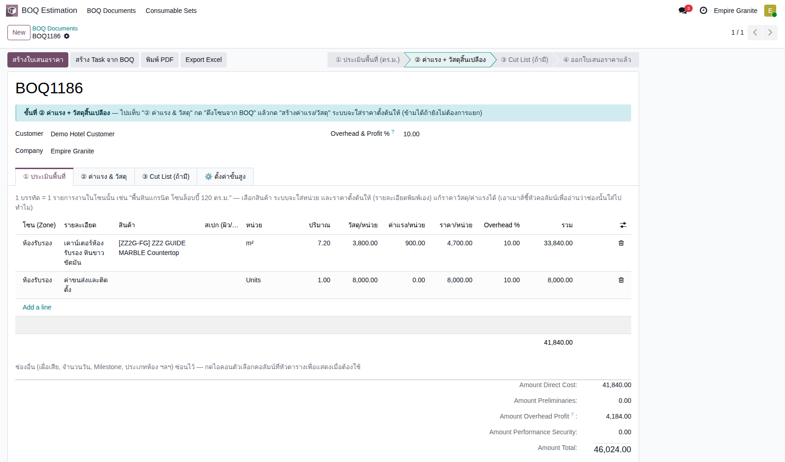 |
B. ใบเสนอราคา
ออกใบเสนอราคาจาก BOQ · ตรวจรายชิ้น · ติ๊ก Sold as Project · 3 test cases
| TC ID | Scenario | Precondition | Steps | ข้อมูลตัวอย่าง | Expected Result | Priority | ภาพหน้าจอ |
|---|---|---|---|---|---|---|---|
| TC-GP-BQ1-03 | สร้างใบเสนอราคาจาก BOQ และตรวจบรรทัด/ยอด บรรทัดพื้นราคา 4,700 ต่อ ตร.ม. = วัสดุ 3,800 + ค่าแรง 900 · ระบบเพิ่มบรรทัด ค่าบริหารโครงการ 10% ให้เอง |
ทำ TC-GP-BQ1-02 เสร็จแล้ว |
|
- | เปิดใบเสนอราคาใหม่ (รอบทดสอบ S01751) ลูกค้า Demo Hotel Customer · ช่อง BOQ Document ชี้กลับ BOQ1186 · บรรทัดพื้น 7.200 m² × 4,700.00 = 33,840.00 · ช่องขนาด/ราคาแสดง 60 × 120 ซม. × 10 ชิ้น หนา 2 ซม. · บรรทัดขนส่งและติดตั้ง 1.000 Units 8,000.00 · บรรทัดค่าบริหารโครงการ 4,184.00 · Untaxed 46,024.00 · VAT 7% 3,221.68 · Total 49,245.68 | High | 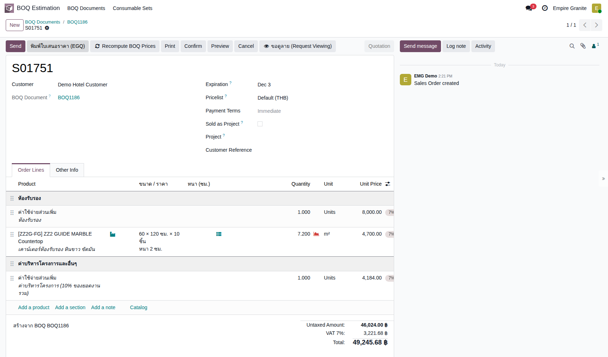 |
| TC-GP-BQ1-04 | ตรวจรายชิ้นที่ติดมาจาก BOQ ขนาดและจำนวนชิ้นคำนวณจาก 7.2 ตร.ม. ÷ พื้นที่แผ่นละ 0.72 ตร.ม. (60 × 120 ซม.) = 10 ชิ้นพอดี · ถ้าหารไม่ลงตัวระบบไม่สร้างรายชิ้น |
ทำ TC-GP-BQ1-03 เสร็จแล้ว |
|
- | หน้าต่าง รายชิ้น มี 1 แถว: กว้าง 60.00 ซม. ยาว 120.00 ซม. จำนวนชิ้น 10.000 ตร.ม. 7.20 · ผลรวมท้ายตาราง 7.20 | Medium | 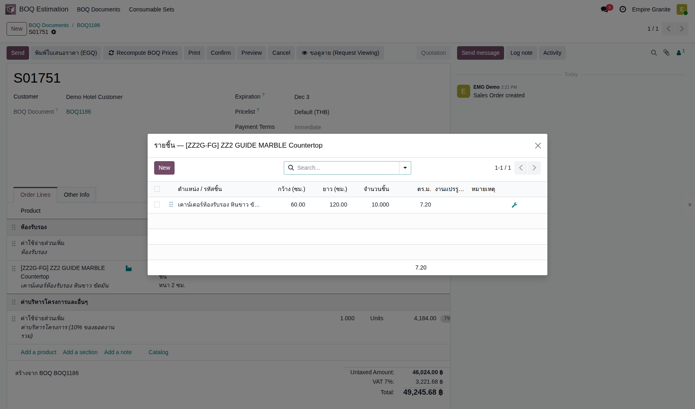 |
| TC-GP-BQ1-05 | ติ๊ก Sold as Project เพื่อให้ดูกำไรของ BOQ ใบนี้ได้ ต้องติ๊กก่อน Confirm — ใบที่ไม่ได้ติ๊กจะไม่มีบัญชีวิเคราะห์ของโปรเจกต์ จึงเลือกดู P&L รายใบไม่ได้ (รอบทดสอบแรก BOQ1120 / S01696 พลาดตรงนี้) |
ทำ TC-GP-BQ1-04 เสร็จแล้ว |
|
- | ช่อง Sold as Project ติ๊กอยู่ · ยอดเดิม 46,024.00 / รวม 49,245.68 ไม่เปลี่ยน | High | 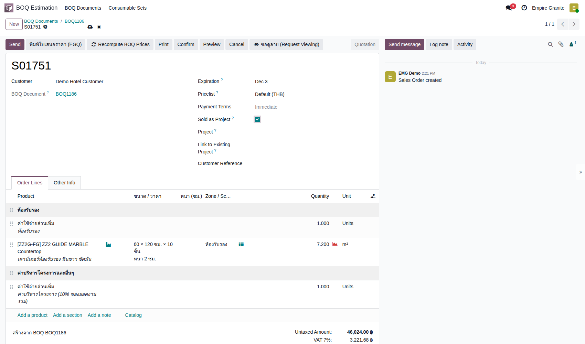 |
C. ยืนยันและผลิต FG
Confirm · ใบสั่งผลิตและ Slab ที่ระบบเลือก · ย้ายสถานีตัด · ผลิตเสร็จ · รายการบัญชีต้นทุน · 4 test cases
| TC ID | Scenario | Precondition | Steps | ข้อมูลตัวอย่าง | Expected Result | Priority | ภาพหน้าจอ |
|---|---|---|---|---|---|---|---|
| TC-GP-BQ1-06 | Confirm ใบเสนอราคาแล้วระบบสร้างใบสั่งผลิตและใบส่งของ รอบรันจริงไม่มีหน้าต่างเตือนตอน Confirm · FG ผลิตตามออเดอร์จึงยังไม่มีสต็อกตอนขาย |
ทำ TC-GP-BQ1-05 เสร็จแล้ว |
|
- | ใบสั่งขาย (S01751) · ปุ่มสมาร์ท Projects 1 · Delivery 1 · FG Production 1 · ยอดเดิม 46,024.00 / 49,245.68 | High | 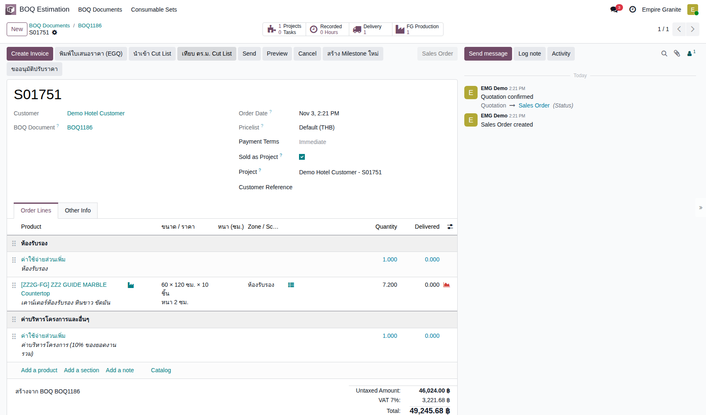 |
| TC-GP-BQ1-07 | ใบสั่งผลิต: ขนาดจาก BOQ และ Slab ที่ระบบเลือกให้ พื้นที่ใช้จริง 7.92 = 7.20 + เผื่อเสีย 10% · Slab ที่เลือกต้องไม่ต่ำกว่านี้ (ป้าย พอ สีเขียว) |
ทำ TC-GP-BQ1-06 เสร็จแล้ว · มี Slab ZZ2 GUIDE MARBLE Available อย่างน้อย 2 แผ่น |
|
- | ใบสั่งผลิต (EG01/STFG/00472) Draft · ต้องใช้ 7.92 ตร.ม. · Slab ที่เลือก 8.70 ตร.ม. ป้าย พอ · ผลผลิต FG 1 แถว กว้าง 0.60 ยาว 1.20 หนา 0.02 (เมตร) จำนวน 10 · แท็บ Slab ที่จะตัด: พื้นที่งาน 7.20 · ต้องใช้รวมเผื่อเสีย 7.92 · แผ่นที่เลือก BLK-26-1482-42 และ -9 (แผ่นละ 1.50 × 2.90 × 0.030 ม. = 4.35 ตร.ม.) | High | 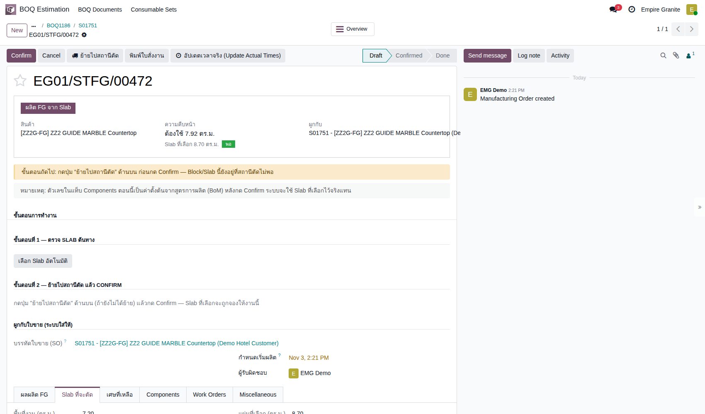 |
| TC-GP-BQ1-08 | ย้ายไปสถานีตัด → Confirm → ผลิต FG เสร็จ ต้องกด ย้ายไปสถานีตัด ก่อน Confirm ไม่เช่นนั้นของที่สถานีตัดไม่พอ · หลัง Confirm มีปุ่ม Plan/Start แต่ไม่ต้องใช้ กด ผลิต FG เสร็จ ได้เลย (ระบบปิดขั้นตัดและทำขอบให้) · หน้าจออาจยังโชว์ Confirmed จนกว่าจะรีเฟรช |
ทำ TC-GP-BQ1-07 เสร็จแล้ว |
|
- | หลัง Confirm: Confirmed · Component Status Available · หลังผลิตเสร็จ: Done · ผลผลิต FG ยังเป็น 0.60 × 1.20 × 10 ชิ้น | High | 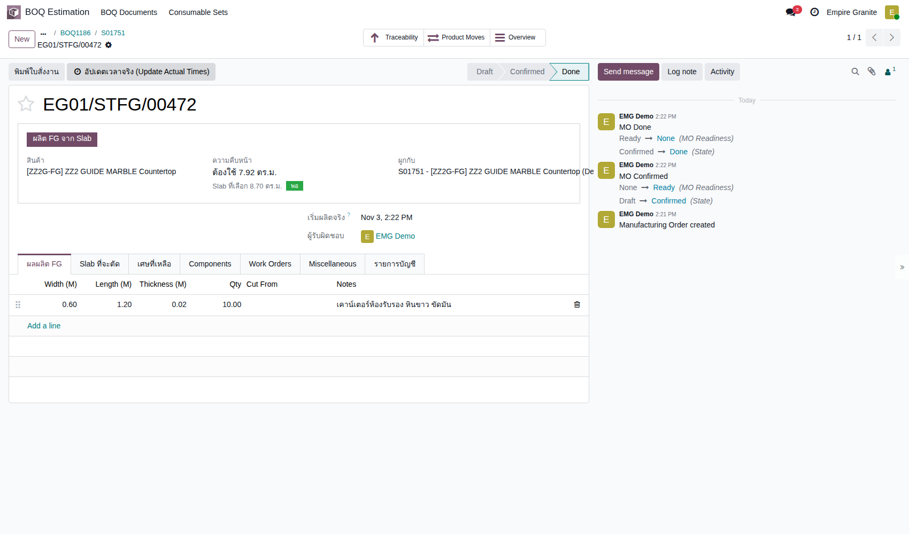 |
| TC-GP-BQ1-09 | ตรวจรายการบัญชีของใบสั่งผลิต (ต้นทุน Slab และค่าแรง) ค่าแรงโรงงาน 1,500 ต่อ ตร.ม. มาจากหมวดสินค้า ไม่ใช่ 900 ที่ตั้งขายใน BOQ · ข้อสังเกตนี้ควรถามลูกค้า/บัญชี |
ทำ TC-GP-BQ1-08 เสร็จแล้ว |
|
ค่าแรง = 7.20 ตร.ม. × 1,500 = 10,800 | 3 รายการ Posted: Inventory Valuation 8,149.12 (STJ/2026/11/0067) · Inventory Valuation 8,149.12 (STJ/2026/11/0068) · FG Production Labor 10,800.00 (MISC/2026/11/0034) · รวม 27,098.24 (Slab 2 แผ่นมูลค่ารวม 8,149.12 ตรงกับต้นทุนขายในใบแจ้งหนี้) | High | 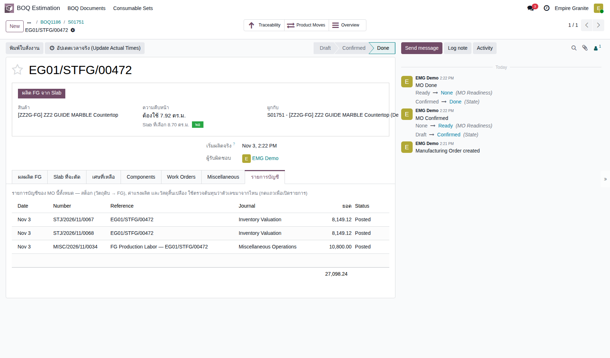 |
D. ส่งของและเก็บเงิน
ส่งของ · ใบแจ้งหนี้และต้นทุนขาย · 2 test cases
| TC ID | Scenario | Precondition | Steps | ข้อมูลตัวอย่าง | Expected Result | Priority | ภาพหน้าจอ |
|---|---|---|---|---|---|---|---|
| TC-GP-BQ1-10 | ส่งของตามใบส่งของที่ระบบสร้างไว้ ใบส่งของ FG ไม่ต้องเลือก Lot หรือสแกน Serial เอง ระบบจองให้ตามที่ผลิต |
ทำ TC-GP-BQ1-09 เสร็จแล้ว |
|
- | ใบส่งของ (EG01/OUT/00756) Ready ก่อนกด · Demand 7.200 · Quantity 7.200 m² · หลัง Validate เป็น Done | High | 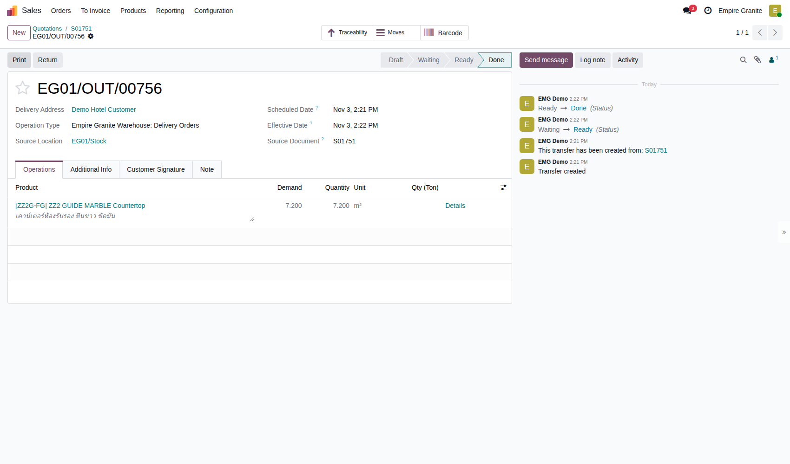 |
| TC-GP-BQ1-11 | ออกใบแจ้งหนี้และตรวจยอด ใบแจ้งหนี้ออกได้หลังส่งของ · ระบบลงต้นทุนขาย 8,149.12 ให้เองในรายการบัญชี · ค่าแรง 10,800 ลงตอนผลิตเสร็จ ไม่อยู่ในใบแจ้งหนี้ |
ทำ TC-GP-BQ1-10 เสร็จแล้ว |
|
- | ใบแจ้งหนี้ (INV/2026/00019) Posted · ลูกค้า Demo Hotel Customer · บรรทัดพื้น 7.200 m² × 4,700.00 · ก่อน VAT 46,024.00 · VAT 7% 3,221.68 · รวม 49,245.68 · Amount Due 49,245.68 | High | 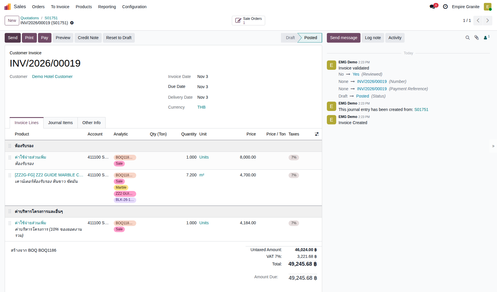 |
E. กำไรของ BOQ ใบนี้ (P&L)
ดูรายได้ ต้นทุน และกำไรขั้นต้นรายโครงการ · 1 test case
| TC ID | Scenario | Precondition | Steps | ข้อมูลตัวอย่าง | Expected Result | Priority | ภาพหน้าจอ |
|---|---|---|---|---|---|---|---|
| TC-GP-BQ1-12 | ดู Profit and Loss ของ BOQ ใบนี้ เลือกบัญชีวิเคราะห์ของ BOQ ได้เฉพาะใบที่ติ๊ก Sold as Project · ต้นทุนในรายงาน = ต้นทุน Slab 8,149.12 + ค่าแรงผลิต 10,800 (ค่าแรงใน BOQ 6,480 เป็นราคาที่ตั้งขาย ไม่ใช่ต้นทุนจริง) |
ทำ TC-GP-BQ1-11 เสร็จแล้ว · เข้า Accounting ได้ |
|
บัญชีวิเคราะห์ = BOQ1186 - Demo Hotel Customer | คอลัมน์ BOQ1186: Revenue 46,024.00 (411100 Sales Revenue) · 511110 COGS - Stone Sales 8,149.12 · 511120 COGS - FG Production (Fabrication) 10,800.00 · Less Costs of Revenue 18,949.12 · Gross Profit 27,074.88 · Net Profit 27,074.88 · รายได้ตรงกับใบแจ้งหนี้ 46,024.00 และต้นทุนตรงกับรายการบัญชีของใบสั่งผลิต | High | 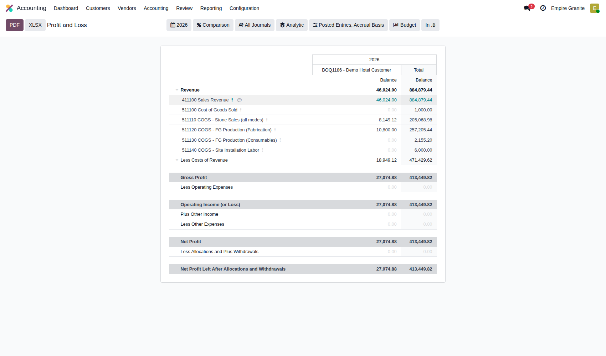 |